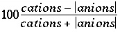

This keyword data block is used to produce a file that is suitable for processing by spreadsheets and other data-management software. It is possible to print selected entities from the compositions of solution, exchange assemblage, gas phase, pure-phase assemblage, solid-solution assemblage, and surface assemblage after the completion of each type of calculation. The selected-output file contains a column for each data item defined through the identifiers of SELECTED_OUTPUT. Initial print settings are shown in lines 1-4, 6-20 and 29 of the following example data block.
Line 0: SELECTED_OUTPUT Line 1: -file selected.out Line 2: -selected_out true Line 3: -user_punch true Line 4: -high_precision false # set value for all identifiers on lines 6 through 20 Line 5: -reset true # By default, data for the identifiers marked "true" # will be printed in order of line numbers, # By default, data for the identifiers marked "false" # will not be printed Line 6: -simulation true Line 7: -state true Line 8: -solution true Line 9: -distance true Line 10: -time true Line 11: -step true Line 12: -ph true Line 13: -pe true Line 14: -reaction false Line 15: -temperature false Line 16: -alkalinity false Line 17: -ionic_strength false Line 18: -water false Line 19: -charge_balance false Line 20: -percent_error false # define printout of selected properties Line 21: -totals Hfo_s C C(4) C(-4) N N(0) Line 21a: Fe Fe(3) Fe(2) Ca Mg Na Cl Line 22: -molalities Fe+2 Hfo_sOZn+ ZnX2 Line 23: -activities H+ Ca+2 CO2 HCO3- CO3-2 Line 24: -equilibrium_phases Calcite Dolomite Sphalerite Line 25: -saturation_indices CO2(g) Siderite Line 26: -gases CO2(g) N2(g) O2(g) Line 27: -kinetic_reactants CH2O Pyrite Line 28: -solid_solutions CaSO4 SrSO4 Line 29: -inverse_modeling true
SELECTED_OUTPUT is the keyword for the data block. No additional data are read on this line. Optionally, SELECTED_OUT, SELECT_OUTPUT, or SELECT_OUT.
-file--Identifier allows definition of the name of the file where the selected results are written. Optionally, file, or -f[ ile].
file name --File name where selected results are written. If the file exists, the contents will be overwritten. File names must conform to operating system conventions. Default is selected.out.
Line 2: -selected_out [( True or False )]
-selected_out--Controls printing to the selected-output file. When -selected_out is set to false, all printing to the selected-output file is halted. Printing can be resumed if -selected_out is set to true in a SELECTED_OUTPUT data block in a subsequent simulation. Default is true. Optionally, -se[lected_out]. Note the hyphen is required to avoid a conflict with synonym of keyword SELECTED_OUTPUT.
Line 3: -user_punch [( True or False )]
-user_punch--Controls printing of information defined in USER_PUNCH to the selected-output file. When -user_punch is set to false, information defined in USER_PUNCH will not be written to the selected-output file. Writing this information to the selected-output file can be resumed if -user_punch is set to true in a SELECTED_OUTPUT data block in a subsequent simulation. Default is true. Optionally, -u[ ser_punch]. Note the hyphen is required to avoid a conflict with the keyword USER_PUNCH.
Line 4: -high_precision [( True or False )]
-high_precision--Prints results to the selected-output file with extra numerical precision (12 decimal places, default is 3 or 4). In addition, the criterion for convergence of the calculations is set to 1e-12 (default is 1e-8, -convergence_tolerance in KNOBS data block). Default is true. Initial value at start of program is false. Optionally, high_precision, or -h[ igh_precision].
Line 5: -reset [( True or False )]
-reset--Resets all identifiers listed in lines 6-20 to true or false. Default is true. Optionally, reset, or -r[ eset].
Line 6: -simulation [( True or False )]
-simulation--Prints simulation number, or for advective-dispersive transport calculations the number of advective-dispersive transport simulations, to each line of the selected-output file if value is true, excludes print if value is false. Default is true. Initial value at start of program is true. Optionally, simulation, sim, or -sim[ ulation].
Line 7: -state [( True or False )]
-state--Prints type of calculation in each line of the selected-output file if value is true, excludes print if value is false. The following character strings are used to identify each calculation type: initial solution, "i_soln"; initial exchange composition, "i_exch"; initial surface composition, "i_surf"; initial gas-phase composition, "i_gas"; batch-reaction, "react"; inverse, "inverse"; advection, "advect"; and transport, "transp". Default is true. Initial value at start of program is true. Optionally, state, or -st[ ate].
Line 8: -solution [( True or False )]
-solution--Prints solution number used for the calculation in each line of the selected-output file if value is true, excludes print if value is false. Default is true. Initial value at start of program is true. Optionally, soln, -solu[ tion], or -soln. Note the hyphen is required to avoid a conflict with the keyword SOLUTION.
Line 9: -distance [( True or False )]
-distance--Prints to the selected-output file (1) the X-coordinate of the cell for advective-dispersive transport calculations ( TRANSPORT), (2) the cell number for advection calculations ( ADVECTION), or (3) -99 for other calculations if value is true, excludes print if value is false. Default is true. Initial value at start of program is true. Optionally, distance, dist, or -d[ istance].
Line 10: -time [( True or False )]
-time--Prints to the selected-output file (1) the cumulative model time since the beginning of the simulation for batch-reaction calculations with kinetics, (2) the cumulative transport time since the beginning of the run (or since -initial_time identifier was last defined) for advective-dispersive transport calculations and advective transport calculations for which -time_step is defined, (3) the advection shift number for advective transport calculations for which -time_step is not defined, or (4) -99 for other calculations if value is true, excludes print if value is false. Default is true. Initial value at start of program is true. Optionally, time, or -ti[ me].
Line 11: -step [( True or False )]
-step--Prints to the selected-output file (1) advection shift number for transport calculations, (2) reaction step for batch-reaction calculations, or (3) -99 for other calculations if value is true, excludes print if value is false. Default is true. Initial value at start of program is true. Optionally, step, or -ste[ p].
Line 12: -pH [( True or False )]
-pH--Prints pH to each line of the selected-output file if value is true, excludes print if value is false. Default is true. Initial value at start of program is true. Optionally, pH (case insensitive).
Line 13: -pe [( True or False )]
-pe--Prints pe to each line of the selected-output file if value is true, excludes print if value is false. Default is true. Initial value at start of program is true. Optionally, pe.
Line 14: -reaction [( True or False )]
-reaction--Prints (1) reaction increment to the selected-output file if REACTION is used in the calculation or (2) -99 for other calculations if value is true, excludes print if value is false. Default is true. Initial value at start of program is false. Optionally, rxn, -rea[ ction], or -rx[ n]. Note the hyphen is required to avoid a conflict with the keyword REACTION.
Line 15: -temperature [( True or False )]
-temperature--Prints temperature (Celsius) to the selected-output file if value is true, excludes print if value is false. Default is true. Initial value at start of program is false. Optionally, temp, temperature, or -te[ mperature].
Line 16: -alkalinity [( True or False )]
-alkalinity--Prints alkalinity (eq/kgw) to the selected-output file if value is true, excludes print if value is false. Default is true. Initial value at start of program is false. Optionally, alkalinity, alk, or -al[ kalinity].
Line 17: -ionic_strength [( True or False )]
-ionic_strength--Prints ionic strength to the selected-output file if value is true, excludes print if value is false. Default is true. Initial value at start of program is false. Optionally, ionic_strength, mu, -io[ nic_strength], or -mu.
Line 18: -water [( True or False )]
-water--Writes mass of water to the selected-output file if value is true, excludes print if value is false. Default is true. Initial value at start of program is false. Optionally, water or -w[ ater].
Line 19: -charge_balance [( True or False )]
-charge_balance--Writes charge balance of solution (eq) to the selected-output file if value is true, excludes print if value is false. Default is true. Initial value at start of program is false. Optionally, charge_balance or -c[ harge_balance].
Line 20: -percent_error [( True or False )]
-percent_error--Writes percent error in charge balance ( ) to the selected-output file if value is true, excludes print if value is false. Default is true. Initial value at start of program is false. Optionally, percent_error or -per[ cent_error].
-totals--Identifier allows definition of a list of total concentrations that will be written to the selected-output file. Optionally, totals, or -t[ otals].
element list --List of elements, element valence states, exchange sites, or surface sites for which total concentrations will be written. The list may continue on subsequent line(s) (line 2a). Elements, valence states, exchange sites, and surface sites must have been defined in the first column of SOLUTION_MASTER_SPECIES, EXCHANGE_MASTER_SPECIES, or SURFACE_MASTER_SPECIES input. After each calculation, the concentration (mol/kgw) of each of the selected elements, element valence states, exchange sites, and surface sites will be written to the selected-output file. If an element is not defined or is not present in the calculation, its concentration will be printed as 0.
Line 22: -molalities species list
-molalities--Identifier allows definition of a list of species for which concentrations will be written to the selected-output file. Optionally, molalities, mol, or -m[ olalities].
species list --List of aqueous, exchange, or surface species for which concentrations will be written to the selected-output file. The list may continue on subsequent line(s). Species must have been defined by SOLUTION_SPECIES, EXCHANGE_SPECIES, or SURFACE_SPECIES input. After each calculation, the concentration (mol/kgw) of each species in the list will be written to the selected-output file. If a species is not defined or is not present in the calculation, its concentration will be printed as 0.
Line 23: -activities species list
-activities--Identifier allows definition of a list of species for which log of activity will be written to the selected-output file. Optionally, activities, or -a[ ctivities].
species list --List of aqueous, exchange, or surface species for which log of activity will be written to the selected-output file. The list may continue on subsequent line(s). Species must have been defined by SOLUTION_SPECIES, EXCHANGE_SPECIES, or SURFACE_SPECIES input. After each calculation, the log (base 10) of the activity of each of the species will be written to the selected-output file. If a species is not defined or is not present in the calculation, its log activity will be printed as -999.999.
Line 24: -equilibrium_phases phase list
-equilibrium_phases--Identifier allows definition of a list of pure phases for which (1) total amounts in the pure-phase assemblage and (2) moles transferred will be written to the selected-output file. Optionally, -e[quilibrium_phases], or -p[ ure_phases]. Note the hyphen is required to avoid a conflict with the keyword EQUILIBRIUM_PHASES and its synonyms.
phase list --List of phases for which data will be written to the selected-output file. The list may continue on subsequent line(s). Each phase must have been defined by PHASES input. After each calculation, two values are written to the selected-output file, (1) the moles of each of the phases (defined by EQUILIBRIUM_PHASES), and (2) the moles transferred. If the phase is not defined or is not present in the pure-phase assemblage, the amounts will be printed as 0.
Line 25: -saturation_indices phase list
-saturation_indices--Identifier allows definition of a list of phases for which saturation indices [or log (base 10) partial pressure for gases] will be written to the selected-output file. Optionally, saturation_indices, si, -s[ aturation_indices], or -s[ i].
phase list --List of phases for which saturation indices [or log (base 10) partial pressure for gases] will be written to the selected-output file. The list may continue on subsequent line(s). Each phase must have been defined by PHASES input. After each calculation, the saturation index of each of the phases will be written to the selected-output file. If the phase is not defined or if one or more of its constituent elements is not in solution, the saturation index will be printed as -999.999.
Line 26: -gases gas-component list
-gases--Identifier allows definition of a list of gas components for which the amount in the gas phase (moles) will be written to the selected-output file. Optionally, gases, or -g[ ases].
gas-component list --List of gas components. The list may continue on subsequent line(s). Each gas component must have been defined by PHASES input. After each calculation, the moles of each of the selected gas components in the gas phase will be written to the selected-output file. If a gas component is not defined or is not present in the gas phase, the amount will be printed as 0. Before the columns for the gas components, the flat file will contain the total pressure, total moles of gas components, and the volume of the gas phase. Partial pressures of any gas, including the components in the gas phase, can be obtained by use of the -saturation_indices identifier.
Line 27: -kinetic_reactants reactant list
-kinetic_reactants--Identifier allows definition of a list of kinetically controlled reactants for which two values are written to the selected-output file, (1) the current moles of the reactant, and (2) the moles transferred of the reactant. Optionally, kin, -k[ inetics], kinetic_reactants, or -k[ inetic_reactants]. Note the hyphen is required to avoid a conflict with the keyword KINETICS.
reactant list --List of kinetically controlled reactants. The list may continue on subsequent line(s). Each reactant is identified by the rate name in the KINETICS data block. (The rate name in turn refers to a rate expression defined with RATES data block.) After each calculation, the moles and the moles transferred of each of the kinetically controlled reactants will be written to the selected-output file. If the reactant is not defined, the amount will be printed as 0.
Line 28: -solid_solutions component list
-solid_solutions--Identifier allows definition of a list of solid-solution components for which the moles in a solid solution is written to the selected-output file. Optionally, -so[ lid_solutions]. Note the hyphen is required to avoid a conflict with the keyword SOLID_SOLUTIONS.
component list --List of solid-solution components. The list may continue on subsequent line(s). Each component is identified by the component name defined in the SOLID_SOLUTIONS data block. (The component names are also phase names which have been defined in the PHASES data block.) After each calculation, the moles of each solid-solution component in the list will be written to the selected-output file. If the component is not defined in any of the solid solutions, the amount will be printed as 0.
Line 29: -inverse_modeling [( True or False )]
-inverse_modeling--Prints results of inverse modeling to the selected-output file if value is true, excludes print if value is false. For each inverse model, three values are printed for each solution and phase defined in the INVERSE_MODELING data block: the central value of the mixing fraction or mole transfer, and the minimum and maximum of the mixing fraction or mole transfer, which are zero unless -range is specified in the INVERSE_MODELING data block. Default is true. Initial value at start of program is true. Optionally, inverse or -i[ nverse_modeling]. Note the hyphen is required to avoid a conflict with the keyword INVERSE_MODELING.
The selected-output file contains a column for each data item defined through the identifiers of SELECTED_OUTPUT. Additional columns may be defined through the USER_PUNCH data block. In the input for the SELECTED_OUTPUT data block, all element names, species names, and phase names must be spelled exactly, including the case and charge for the species names. One line containing an entry for each of the items will be written to the selected-output file after each calculation--that is, after any initial solution, initial exchange-composition, initial surface-composition, or initial gas-phase-composition calculation and after each step in batch-reaction or each shift in transport calculations. The -selected_output identifier in the PRINT data block can be used to selectively suspend and resume writing results to the selected-output file. In transport simulations, the frequency at which results are written to the selected-output file can be controlled by the -punch_cells and -punch_frequency identifiers in ADVECTION and TRANSPORT data blocks).
Several data items are included by default at the beginning of each line in the selected-output file to identify the type of calculation that has been performed. These data are described in lines 14 through 21. Data described in lines 22 through 28 may also be included in the output file. All of the data described by lines 14 through 28 may be simultaneously included or excluded from the selected-output file with the -reset identifier. Unlike most of PHREEQC input, the order in which the identifiers are entered is important when using the -reset identifier. Any identifier set before the -reset in the data block will be reset when -reset is encountered. Thus, -reset should be specified before any of the identifiers described in lines 14 through 28.
The first line of the selected-output file contains a description of each data column. The columns of data are written in the following order: items described by lines 14 through 28, totals, molalities, log activities, pure phases (two columns for each phase--total amount of phase and mole transfer for current calculation), saturation indices, gas-phase data (multiple columns), kinetically controlled reactants (two columns for each reactant--total amount of reactant and mole transfer for current calculation), solid-solution components, and data defined by the USER_PUNCH data block. A data item within an input list (for example an aqueous species within the -molalities list) is printed in the order of the list. If the selected-output file contains data for gases ( -gases identifier), the total pressure, total moles in the gas phase, and the total volume of the gas phase precede the moles of each gas component specified by the identifier.
The keyword SELECTED_OUTPUT is used in example problems 2, 5, 6, 7, 8, 9, 10, 11, 12, 13, 14, and 15.
ADVECTION, EQUILIBRIUM_PHASES, EXCHANGE_MASTER_SPECIES, EXCHANGE_SPECIES, GAS_PHASE, INVERSE_MODELING, KINETICS, KNOBS, PHASES, PRINT, REACTION, SOLUTION_MASTER_SPECIES, SOLID_SOLUTIONS, SOLUTION_SPECIES, SURFACE_MASTER_SPECIES, SURFACE_SPECIES, TRANSPORT, and USER_PUNCH.